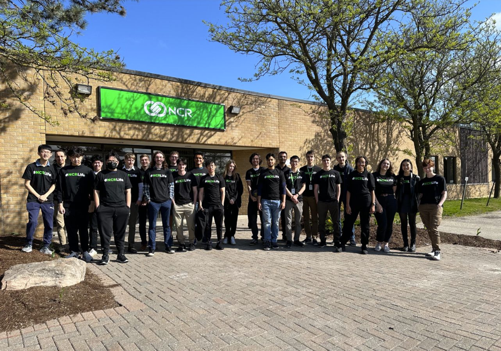

Introduction
I joined NCR for my first co-op work term, which is an 8 month work term set to finish in late December 2023. For the past 4 months I have been a part of a Core-Integration team working on adapters to communicate to bank cores. It's been a great experience on a great team.
Information About The Employer
NCR is the world's leading enterprise provider of software, hardware and services for a wide variety of industries; including banks, retailers, restaurants, small business, telecom and technology. Originally founded in 1884 selling cash registers, NCR continues to grow as a company and provide a variety of products to customers worldwide.
Learning Goals
1) Improve my collaboration
In the past 2 years, I have completed most of my school assignments independently. As this is my first time working in a software development job, I knew that I would be exposed to a team environment and would have to grow to become comfortable within this new role. To achieve this goal, I researched unfamiliar topics prior to team meetings so I would be able to contribute during technical discussions. Additionally, I would constantly communicate any changes that may have effects on other team members when working on tasks, ensuring that they can tailor their part accordingly to successfully complete our project. Overall, I received positive feedback from my team members proving that I achieved my goal and was a valued member of the team.
2) Learning and developing a strong understanding of technologies used including docker, kubernetes, GCP and more
The second goal I had as I began my work term was to learn and develop a strong understanding of the new tools and technologies that my team will use. Since this was my first co-op, I expected a big learning curve with all the new technologies that I would be introduced to. To improve my understanding I constantly read documentation, looked at examples and asked my teammates questions. After lots of effort, I developed a strong understanding of these technologies, eventually getting to a point where I am now able to efficiently use them while working on the development of our projects. This development is still ongoing as I continue to use these technologies.
3) Become comfortable working with a large codebase
My final goal was to become more comfortable and confident working in a large codebase. Prior to my work term, as I completed school or personal projects, I almost always worked on code written by myself. Switching to NCR’s large codebase was a big change, it was much harder to navigate the new codebase due to the large number of ongoing projects that would each have multiple other large projects as dependencies. To become more comfortable at navigating this codebase, I would read through different projects that my team was involved with along with other internal projects that were dependencies of projects we were working on. Additionally, I would often review pull requests, to familiarize myself with current projects being developed by my team, and gain a better understanding of each project’s functionalities. After working towards this goal I feel more comfortable working with the large codebase and can now navigate to find different classes and files without needing assistance.
My Role At The Company
- I worked on Nexus Core-Integration team which was split between Waterloo and Atlanta
- Developed RESTful APIs in Java utilizing Spring Boot framework, integrating with core banking systems provided by financial institutions
- Built a standardized library designed for future Spring-based adapters
- Wrote tests for multiple adapters and a common library
- Troubleshooted various development and production bugs
- Contributed to the recruitment of incoming interns by reviewing resumes and contributing to interviews
Conclusion
As my first 4 month co-op term has come to an end, I have had a great experience working at NCR. My skills as a developer and collaborator have improved significantly as I have moved from project to project with my Core-Integration team. I am excited for the next 4 months to continue to build upon the skills I have learned and help my team achieve our goals.
List of Technologies Used
Improved Technologies
- Java
- Docker
- Git
- JUnit
New Technologies
- Spring Boot
- Maven
- Kubernetes
- Helm
- Jenkins
- GCP
- Swagger
- Shell Scripts
- Mockito
- Postman
- Cucumber
- Aquasec/Coverity/Whitesource